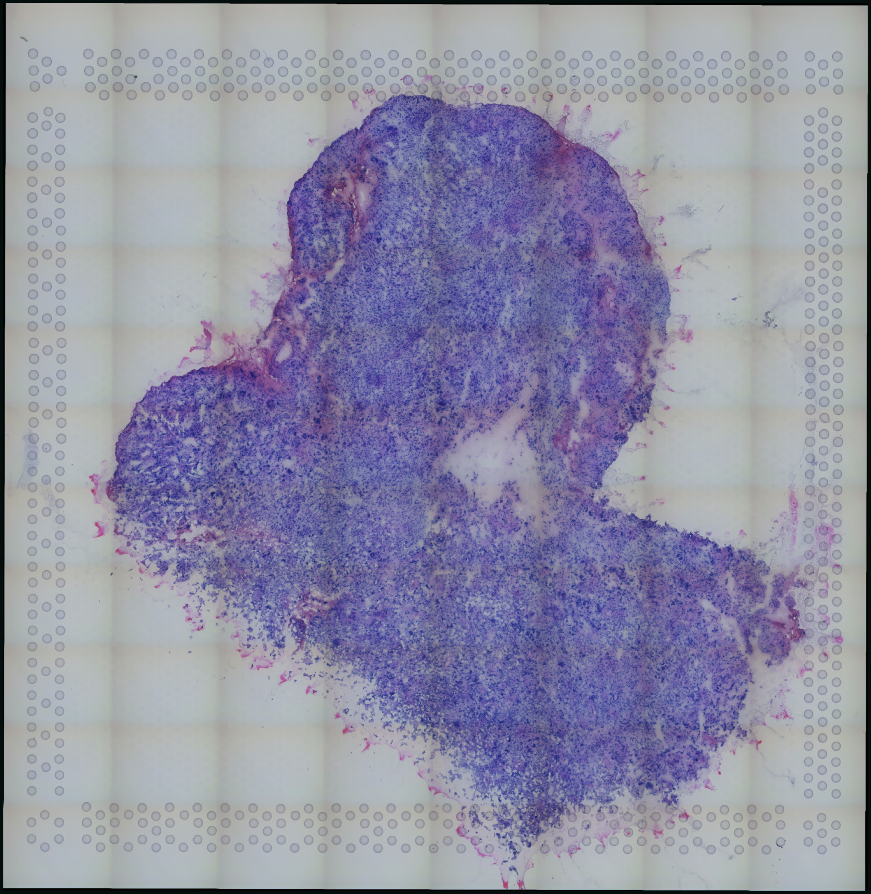
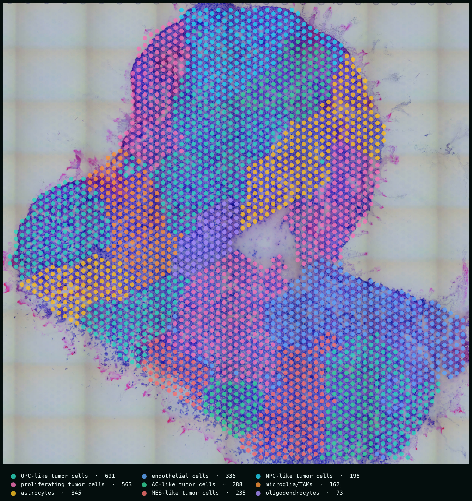
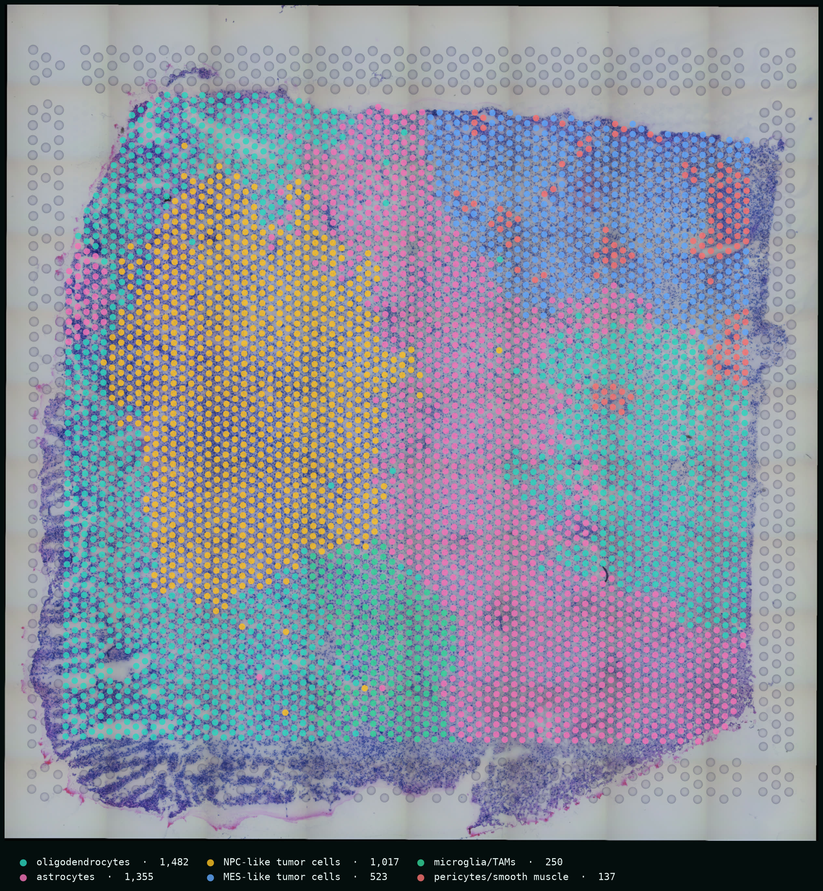
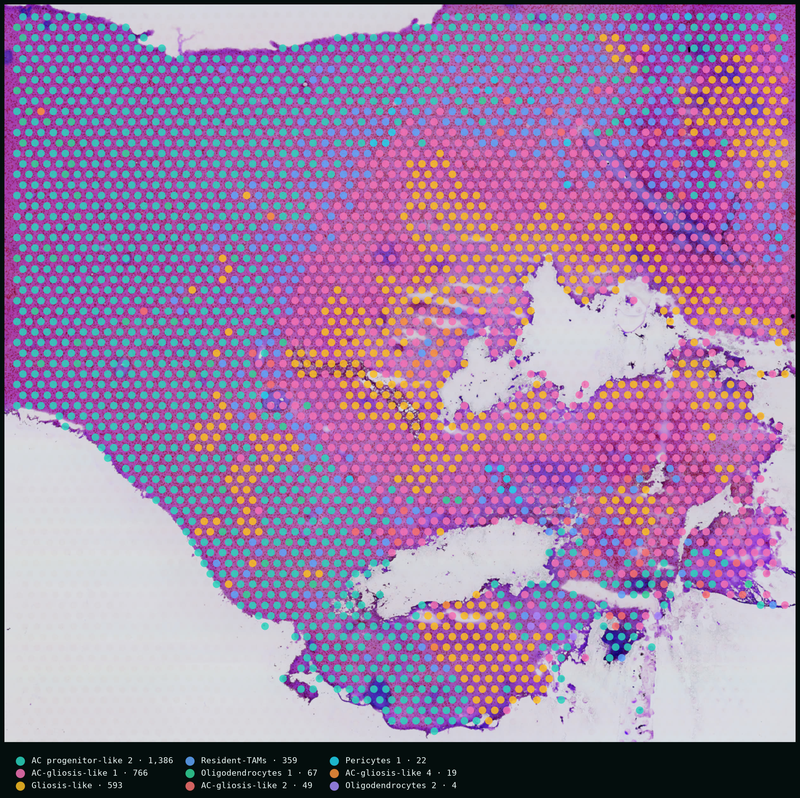
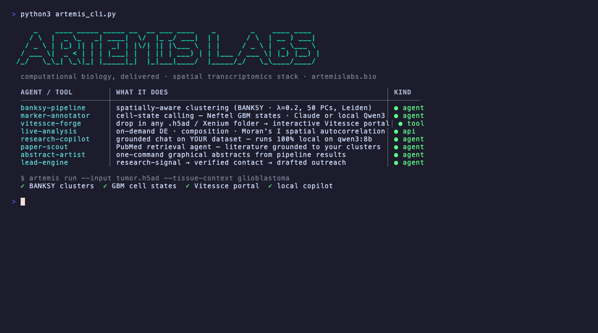

Drop in a dataset.
Get a living atlas.
Artemis BioLabs turns raw spatial transcriptomics into interactive atlases your whole lab can explore — with an AI copilot that can run with a local model through Ollama.
Visium · Xenium · CODEX → BANKSY → annotated Vitessce portal


Our team has trained and worked with researchers at
01 · PIPELINE
One command, five stages, zero notebooks.
1Load + preprocess
Any .h5ad or 10x Xenium folder. Counts detected, normalized, log1p — spatial coordinates verified.
load_h5ad(input)2BANKSY clustering
Each spot is embedded with its neighborhood — clusters follow tissue architecture, not just expression.
λ=0.2 · k=15 · Leiden3Cell-state annotation
Controlled-vocabulary marker agent — Claude in the cloud, or a local model through Ollama.
AC·MES·NPC·OPC-like vocab4Vitessce portal
Chunk-optimized zarr + an interactive portal: spatial view, UMAP, heatmap, marker search.
portal.html + data.zarr5Live analysis + copilot
On-demand differential expression, composition, Moran's I — and a grounded chat on your data.
DE · Moran's I · chat02 · BANKSY
Clustering that sees the tissue.
Standard clustering sees each spot alone — expression without place. The tissue dissolves into noise.
BANKSY embeds every spot with its neighborhood — mean expression and an azimuthal gradient over the k-nearest ring.
Domains emerge that follow the anatomy — this is the real GBM1 section, 4,764 spots, states model-annotated by the pipeline.
03 · GLIOBLASTOMA, LIVE
Five sections, one afternoon.
Five public glioma Visium sections — four adult high-grade gliomas from the Ren et al. 2023 cohort (GSE194329; two IDH-wildtype GBM, two IDH-mutant secondary), one glioblastoma from 10x Genomics — dropped into the pipeline unmodified. BANKSY domains, putative cell states, and marker maps, each with its own interactive Vitessce portal.

Fig. 2 | High-resolution H&E with BANKSY domains and cell states called by a local Qwen3-8B agent (the same pipeline runs on Claude when egress is fine) — click any view for full resolution. Public data: GSE194329 (Ren et al., Nat Commun 2023); 10x Genomics Parent Visium. Cell-state labels are model-annotated and not independently validated.
Fig. 3 | The live portal — three tumors and a local-LLM question, recorded headless in one take.
04 · DE JONG ET AL. (NATURE 2026 · PREPRINT 2025)
A Nature paper, loaded overnight.
The claim in one line
GB heterogeneity is not chaos — one conserved, spatially patterned trajectory, developmental-like → gliosis → hypoxia, organizes cancer cells, subclones and the myeloid TME across tumours.
We pulled their public manuscript sections and imported them into the portal with the paper's own analysis intact: cell2location cell states, NMF spatial niches, and IvyGAP histopathology, each explorable next to the H&E. Open AT10 live →

Fig. 4 | Imported unmodified — no re-clustering; the paper's own deconvolution and annotations drive every view. Data: de Jong et al., Nature 2026 (preprint 2025; open access) · gbmspace.org · doi:10.1038/s41586-026-11234-8. Nine sections live in the portal.
05 · WHAT WE DO
Every core your biotech would build or rent.
One AI-powered team.
Single-cell
Raw reads to annotated atlases · iPSC benchmarking
demo on request
CUT&Tag and chromatin
Peaks, tracks, differential binding
demo on request
Long-read sequencing
Isoforms, SVs and methylation
demo on request
Radiomics and imaging
Segmentation to outcome models
demo on request
Calcium imaging
Wave detection without hand scoring
demo on request
Clinical data and biostatistics
Cohorts, trials, survival models
demo on request
Custom apps: DNA Studio
Plasmid maps from SnapGene files
demo on request
Also bulk RNA-seq, variants, proteomics, metabolomics, cytometry and microbiome.
06 · DATASET CATALOG
The public GBM spatial atlas, catalogued.
Every public spatial-transcriptomics dataset of glioblastoma we could verify — platform, scope, and accession — ready to drop into the pipeline. Rows marked ● are already live in the portal.
Table 1 | Public GBM spatial transcriptomics datasets (n = 16).
| Dataset | Platform | Scope | Accession | Relevance |
|---|---|---|---|---|
| De Jong et al. 2025 preprint (Nature 2026), GBM-Space (Xenium) | 10x Xenium | 17 sections, 8 tumours (BioStudies S-BIAD2898) | S-BIAD2898 (BioImage Archive) | Anchor dataset; edge to core trajectory |
| ●De Jong et al. 2025 preprint (Nature 2026), GBM-Space (Visium + snRNA/snATAC) | 10x Visium (whole transcriptome) + snMultiome | 97 Visium sections, 12 tumours; 1,025,329 nuclei | E-MTAB-17164 (ArrayExpress); CELLxGENE | Same tumours as Xenium set, so it is the cleanest per-modality value-add comparison |
| Greenwald et al. 2024 (Cell), Tirosh lab | 10x Visium | 13 IDH-wt GBM + 6 IDH-mut glioma | GSE237183 | Hypoxia-driven 5-layer organization; overlaps de Jong hypoxia axis |
| Ravi et al. 2022 (Cancer Cell), Freiburg/Heiland | 10x Visium + MALDI + IMC | 28 specimens, 20 patients, 88,793 spots | Dryad doi:10.5061/dryad.h70rxwdmj | Includes non-tumour cortex, useful reactive-astrocyte reference |
| Pai et al. 2025, resection-margin multiome | 10x Visium + snRNA-seq + snATAC-seq | Visium from 2 GBM patients (1 per sex); multiome from 6 tumours | GSE286413 (spatial); GSE286419 (snRNA); GSE286415 (snATAC) | Closest public match to matched core-vs-margin sampling designs |
| Sonpatki/Shah et al. 2025-26, SNUH glioma atlas | 10x Xenium + Visium + scRNA/CITE-seq | Xenium 4 GBM patients; Visium 13 GBM (+ IDH-mut, normal) | Zenodo 17622242 (Xenium); Zenodo 17572905 (Visium) | Second public GBM Xenium cohort with a different panel; tests panel dependence |
| De et al. 2025, matrisome Xenium | 10x Xenium | GBM sections, grade 3, TMA of grade 2-4, TMA of GBM core and edge | S-BSST2273 (BioStudies) | Core/edge TMA plus non-cancer brain; ECM-focused panel may lack CNV-informative genes |
| Michigan cohort 2025 (bioRxiv), Ivy GAP niches | 10x Visium | 14 slides, 7 patients (8 primary, 6 recurrent) | Zenodo 16505469 | Recurrent (post-therapy) slides relevant to therapy-induced senescence question |
| Glioma LOH and ecDNA spatial study (2025) | 10x Visium + Visium CytAssist FFPE | 11 gliomas (FF) + 6 IDH-wt EGFR+ GBM (FFPE) | GSE242352 | Pairs spatial with DNA-seq, so CNV calls can be checked against ground truth |
| 10x Genomics, Xenium IO panel GBM | 10x Xenium | 1 donor, 816,769 cells | 10x public dataset | Large single-section Xenium test case |
| 10x Genomics, Xenium brain preview | 10x Xenium | 40,887 GBM cells; 24,406 healthy cells | 10x public dataset | Healthy cortex on same slide gives a normal astrocyte reference |
| 10x Genomics, Visium CytAssist gene + protein GBM | 10x Visium CytAssist (RNA + protein) | 1 donor | 10x public dataset | Protein layer (e.g. GFAP) for marker sanity checks |
| 10x Genomics, Visium FFPE brain cancer 11 mm | 10x Visium CytAssist | 1 donor; paired Flex scRNA from same block | 10x public dataset | Same-block single-cell pairing for deconvolution checks |
| Linnarsson lab 2025, GBM organoids | 10x Xenium | Organoids under hypoxia and plasma perturbation | S-BIAD1700 | Hypoxia perturbation; secondary, not tissue |
| Kastner et al. 2026, mouse GBM models | 10x Visium HD + Xenium + GeoMx | Visium HD 4, Xenium 2, GeoMx 12 | Zenodo 21873496 | Only Visium HD GBM found; mouse, so secondary |
| Hong Kong CosMx 6K cohort (abstract only) | NanoString CosMx 6K | 21 cases, 337,622 cells | No public deposit found | Watch list; ask authors if data will be shared |
Accessions verified against GEO, BioStudies, Zenodo, Dryad and vendor pages. Ask for the full review.
07 · COPILOT
An analyst inside every portal.
Every portal ships with a research copilot grounded in your dataset — clusters, markers, spatial statistics. Run it on Claude for frontier reasoning, or flip the model dropdown to a local open-source model through Ollama and keep the entire loop on your own hardware: no API keys, no cloud, no PHI exposure.
Values from output/TenX_GBM/report.md; Moran's I computed with the portal's live tool (backend/analysis/live.py) on the same section.
08 · THE STACK
Eight capabilities, one stack.

Fig. 5 | The stack, from the terminal.
built by a researcher-founder
who ran these analyses before selling them.
pipelines that ran, not promises
every figure on this page came from an end-to-end run on public data — Visium and CODEX today, Xenium ingest in the same stack.
GSE194329, reproduced
everything on this page was generated end-to-end from public data. Ask for the code.

Your data has a story.
If your lab is sitting on spatial data and short on computational hands, the first analysis is on us — pick a public or in-house dataset and we'll turn it around as a live portal.